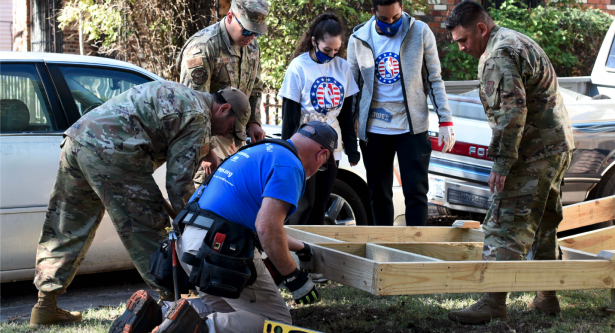

Volunteer!
If you would like to become involved in the building of ramps for our clients, either as an individual or a group, please contact us with a note of your interest to volunteer@texasramps.org or fill out the volunteer request form below and we’ll make sure the right person/city/county receives your message. Some regions have more detailed volunteer information and build schedules online. Please see the links to those pages below.
